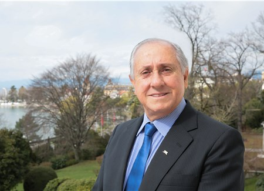
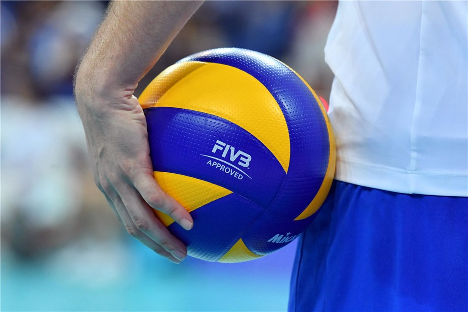

is a team sport in which two teams of six players are separated by a net. Each team tries to score points by grounding a ball on the other team's court under organized rules.[1] It has been a part of the official program of the Summer Olympic Games since 1964
Most watch volleyball news
2017 FIVB PRESIDENT'S ACTIVITY REPORT AVAILABLE NOW

MINI GUIDE TO THE VNL: ALL YOU NEED TO KNOW NOW

“We found out that we are not used to winning. The first set we made it tight by our mistakes, but we were the lucky ones in the end. The second one, the Swiss guys were better from the beginning, they really pushed on the serve and with their good defence and we were not able to score any transitions. The tie-break I would say was similar, in the beginning we were leading by a lot, the Swiss guys were under pressure and then of course they came back in the match and we were the ones under pressure, we were the ones making mistakes and again as in the whole tournament so far, we were the lucky ones in the end,” said Perusic.
know more about volleyball
William G. Morgan
On February 9, 1895, in Holyoke, Massachusetts (United States), William G. Morgan, a YMCA physical education director, created a new game called Mintonette, a name derived from the game of badminton,
Men's winners Of Volleyball at the Summer Olympics
2017
Sérgio Dutra dos Santos
known as Serginho or Escadinha (born 15 October 1975) is a Brazilian volleyball player, a former member of Brazil men's national volleyball team and a player of Sport Club Corinthians Paulista restructured volleyball team, his beloved club[3], 2004 and 2016 Olympic Champion
2012
Murilo Endres
is a Brazilian volleyball player, a member of Brazil men's national volleyball team and Brazilian club SESI São Paulo, double silver medalist of the Olympic Games from Beijing 2008 and London 2012, World Champion (2006, 2010), silver medalist of the World Championship 2014
2008
Clayton Stanley
(born 20 January 1978) is an American volleyball player, a member of United States men's national volleyball team, a participant of the Olympic Games (Athens 2004, Beijing 2008, London 2012), Olympic Champion 2008, NORCECA Champion 2005, multimedalist of the World League
Women's winners Of Volleyball at the Summer Olympics
2017
Zhu Ting
(Chinese: 朱婷; pinyin: Zhū Tíng; born 29 November 1994) is a Chinese professional female volleyball player.[1] She is the Outside Hitter and Captain of China women's national volleyball team,[2] and currently plays for Vakıfbank Istanbul of Turkish League.
2012
Kim Yeon-Kong
(Hangul: 김연경; Hanja: 金軟景 Korean pronunciation: [kimjʌnɡjʌŋ]; born 26 February 1988 in Gurye) is a South Korean female professional volleyball player. She currently plays for the Chinese team Shanghai.[1] Kim signed a three-year contract
2008
Paula Renata Marques
better known as Paula Pequeno (born January 22, 1982), is a two-time Olympic gold medal winning volleyball player from Brazil.[2] She was born in Brasília, Distrito Federal.[2] She plays for Vôlei Bauru. She is one of the few female players in the volleyball league